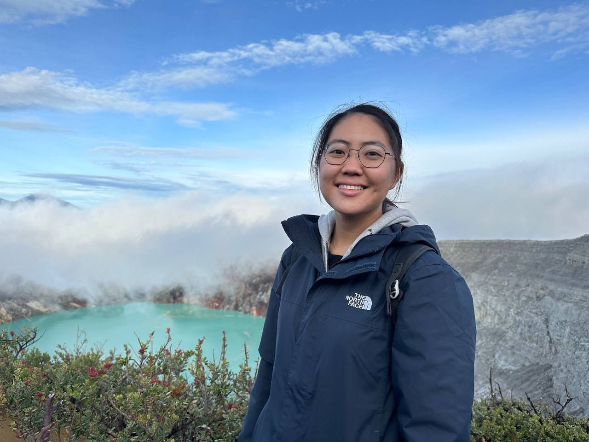

Ong Jing Ting
Mobile: 12345678 | Email: jtt@yahoo.com
LinkedIn: www.linkedin.com/in/jtt
EDUCATION
Singapore University of Technology and Design (SUTD)
- Bachelor of Engineering (Engineering Product Development), Honours
- Focus Track: Robotics
- Singapore-Industry Scholarship (ST Engineering)
University of California, Berkeley (UCB)
- Global Leadership Program
- Game Theory in the Social Sciences, Climate Change Economics
Nanyang Polytechnic (NYP)
- Diploma in Digital and Precision Engineering with Merit
- National Precision Engineering Scholarship (NPES)
WORK EXPERIENCES
ST Engineering Marine Ltd.
Intern Researcher
- Led comprehensive research on marine vessel renewable fuels, utilizing resources from industry leaders such as Royal Dutch
Shell, Wärtsilä, and the International Energy Agency.
- Synthesized data into Excel, analyzing fuel efficiency, carbon emissions, and economic implications to guide departmental
decisions.
- Identified and presented optimal renewable fuel choices, contributing to the department's sustainable decision-making
framework.
Strategic Planning Assistant
- Attended and documented management meetings, ensuring precise capture and dissemination of essential information for
decision-making.
-
Assisted in crafting comprehensive presentation decks for executive reviews and liaised across divisions for effective
coordination of event logistics.
Edmund Optics Singapore, Fine Cementing Department
Assistant Supervisor
- Supervised the performance and discipline of 15 Operators and Technicians.
- Planned and executed cross-training initiatives and department activities for staff members.
- Planned, sourced and procured consumables to ensure smooth production flow.
- Supervised continuous safety improvements.
Edmund Optics Singapore, Fine Cementing Department and Coating Department
Engineering Assistant
- Simplified the functional test process of a particular product, reducing measurement time by 1.4 hours for a batch of 380 pieces.
- Designed innovative tooling for production use using SolidWorks, reducing labour time by 35%.
- Re-designed the production floor layout, reducing Operator walking iterations during a measurement procedure from 25 times to
1 time.
- Tested, evaluated and implemented LED UV curing lamps to replace phased-out fluorescent UV lamps, reducing curing time
from 15 hours to 12 hours for each curing process.
- Developed Manufacturing Process Plans (MPP) for First Article products.
- Evaluated Request-for-Quotation (RFQ) products from customers and developed MPPs accordingly.
- Planned, sourced and developed required consumables and tooling for the new products.
ACADEMIC PROJECTS
Singapore University of Technology and Design
Water Pipe Leakage Detection System, Mechanical Designer and Team Leader
- Effectively led and managed a team of 5 as the project team leader, overseeing all phases from design to assembly.
- Designed and 3D printed the device housing and mechanical components using SolidWorks and FDM technology.
- Spearheaded design experiments and collaborated with school facilities management to identify project scope, pain points, and
resolutions.
TROLL-E, Mechanical Designer and Team Leader
- Effectively led and managed a multidisciplinary team of 5 as the project team leader, overseeing all phases from design to
assembly.
- Demonstrated expertise in mechanical design using SolidWorks, contributing to the development of a foldable and modular
trolley design that optimized functionality and user experience.
- Demonstrated the ability to deliver rapid and effective mechanical solutions, showcasing adaptability and problem-solving
expertise to ensure seamless project progression.
SwingTogether, Mechanical Designer and Team Leader
- Led a team of 5 to design and build an interactive swing that encourages social interaction, provides shelter to the public, and
creates a nostalgic atmosphere for everyone to enjoy and appreciate.
- Designed and prototyped the swing using SolidWorks, FDM 3D printing technology, bench saw and drilling machines.
CO-CURRICULAR ACTIVITIES
Taekwondo Club
Treasurer
- Kept and updated a record of all transactions within the club and was responsible for the security and accurate record of the
money.
- Increased the Club Fund that was used for bonding activities by hosting a club t-shirt sale for all Taekwondo Team members.
ADDITIONAL INFORMATION
- Technical Skills: SolidWorks, Fusion 360, Python, 3D Printing (SLA, FDM), Microsoft Excel, Microsoft Word, Microsoft
Powerpoint, Figma, Adobe Illustrator
- Fluent in English (spoken and written) and Mandarin (spoken)
- Enjoys practicing martial arts (3rd Poom, 1st Dan in Taekwondo | Judo | Krav Maga), exercising and reading.
My HTML Projects Showcase
My SUTD Projects Showcase